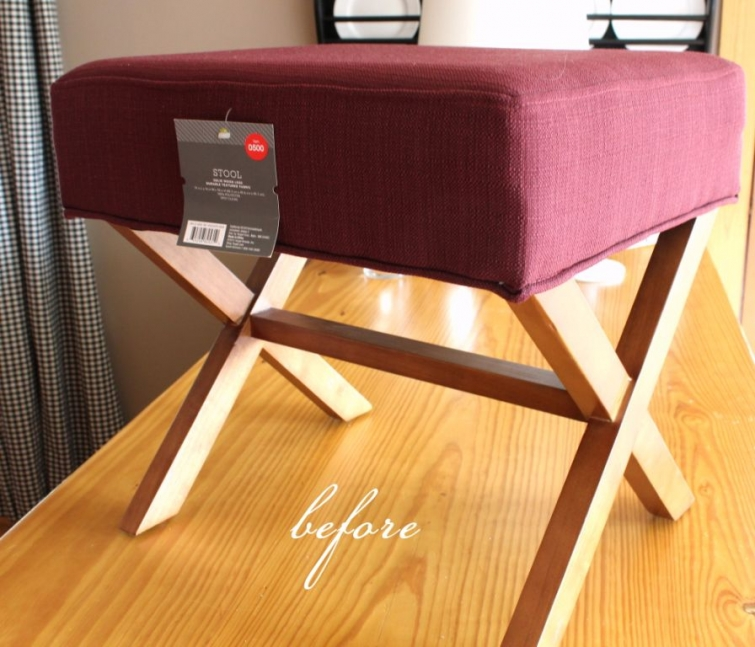
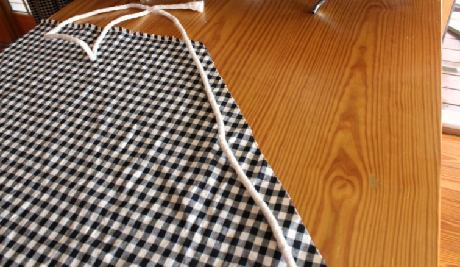

.png)
.PNG)
.PNG)
.PNG)
.PNG)
.PNG)
.JPG)
.JPG)
.PNG)
.PNG)


I started with this plain Jane footstool that I purchased on sale from Target. It was actually available in a nice neutral khaki color, but the wooden legs on that style were darker, and because I was using lighter wood hangers in the closet, I wanted lighter wood legs. (All about the details, right? 🙂 )

My first step was to prepare the piping/welt/cording…not sure what all of you call this, but for the sake of continuity in this post, I am going to just call it cording. Okay? It took about 4 yards of the cording to trim out around the top and bottom of the stool. When using a check fabric to cover it, I really like to cut the fabric on the diagonal. It looks better on the piece. I laid it out and wrapped a width of the fabric around it to see how wide the strips needed to be. (See..not professional at all.)
Then I cut out a number of long pieces until I felt I had enough to cover 4 yards in length.

The next job was to sew the ends of the long pieces together. I don’t really know how to explain the angle of how I overlapped the pieces but you can see it in the photo. (If you are a visual learner that should help.) I imagine you could sew the ends simply straight across, and it would be fine.After making long strips of the fabric, I wrapped it around the cording, and sewed it close. Do notice the position of the needle. You want your stitching to be as close to the cording as you can get it so that it will be tight around it.Then the fun began. I measured the top of the footstool, and after positioning the fabric like I wanted it on the top of the stool, I cut out a rectangle 17 1/2 x 19 1/2. This was about 1 inch longer on each side than the measurement of the top. I then pinned the fabric covered cording to the piece of fabric (not to the stool.) By doing it with it sitting on top of the stool, I was able to better position the cording.
After it was pinned all the way around, I sewed the cording to the fabric rectangle and removed the pins. This is how it looked at that point.
That took care of the top. Then it was time to work on the sides. I cut 2 pieces 7 1/2 x 20 inches and 2 pieces 7 /12 X 17 inches. I tried my best to get the check patterns to match up, but remember I was working with a leftover scrap of material. There was no way to match all of the pattern with the little piece of cloth I had. (I think I now have a scrap of about 2 inches by 5 inches left!) After laying right sides together on top of the rectangle, I sewed it around all the sides. (Yes, it is laying on top of the cording.)
When the sewing was finished, it looked like this.I then folded it and put the right sides together at the corners to stitch up.
When that sewing was finished, I slipped the whole “skirt” on top of the stool to check for fit. I could have simply hemmed it at this point to make it like a slip cover and leave it on there like that. That would have been good for having it cleaned.But I wanted it to be more upholstery than slipcover, so I wrapped it under the edges and used my staple gun to staple it down on the underside of the stool.The final step was to hot glue the trim cording around the bottom of the stool on the edge of the underside.
And here is how it looked all finished.
Just a reminder of the before and after…
and here is a snapshot of all the steps in one photo.
I hope you were able to follow all my amateureness. It really is not difficult to do if you have a sewing machine, staple gun, and glue gun. I do not sew clothing. That sewing machine (which is actually my mom’s and we share it) is used for house projects around here…drapes, pillows, napkins, etc. (but I did take the ever invaluable home ec class in school. 🙂 ) Is sewing becoming a lost art? How many of you own a sewing machine and sew? Just curious.
We’d love to hear!


.PNG)
Great job, Kelly! I love to sew. When I’m in the mood! I’ve been sewing since high school. I made slip covers for my sofa and chairs once. NEVER again! Most aggravating mess! But I could cover a stool. Much simpler! If you don’t mind me adding one thing. Trim the corners. It gets rid of all that extra material from the cording and the top and sides and makes them lay (or is it lie) down better. I couldn’t tell in the picture. Was that a zipper foot you used to sew the material around the cord? A zipper foot will get you even closer to the cord for a tighter look. Ok I’ll stop now. I said one thing and that was two. Sorry. Now you have me in the mood to sew. I think I’ll sew some curtains for the boys’ room I am redecorating.
————————————————————-
Oh I would love any advice you have, Jayne! I really only know how to “drive” the fabric under the needle and that is about it.(Oh and wind the blasted bobbin…hate doing that!) It was not a zipper foot, and Anita recommended using one too. So I will have to figure out how to use that next time. I did make an angled cut at the corners kind of like the spokes of a wheel, but I will take your advice and cut some of the fabric out next time. Thank you!
Kelly
Kelly,
You are excellent at giving step by step tutorials! I just love how you talk us through it with pictures. You are an awesome Teacher! Thanks for sharing once again.
—————————————————————
Thank you Dawn. I try to think through the steps and add the pictures for clarification. I guess that just comes from years and years of trying to teach 8 and 9 year old children! 🙂 (They require A LOT of clarification!)
Kelly
I am so impressed! It came out beautiful and now I really wish I could sew!
-Shelley
————————————————————-
I appreciate your compliments Shelley! Perhaps someone in your local area could teach you to sew. It saves a lot of money around here since we are such do-it-yourself-ers.
Kelly
Beautiful footstool Kelly…you did an amazing job and I so love the red and black combination!!!…
————————————————————-
Thank you Shirley! Red and black really do work very well together. (It’s too bad I am not a UGA fan since those are their school colors.)
Kelly
Hi Kelly,
I do own a sewing machine. I learned to sew via the local PBS station, and watched “Quilt in A Day” and learned how to make quilts. I have a few around the house that I have made over the years. I do not know how to make clothing, but quilts, curtains and pillows are quite do-able for me. As you know, I am looking into getting my sofa reupholstered, but after reading Wanda’s post, maybe I will try slipcovering it instead!
You did a great job on your stool – love the red with the black piping 🙂
Megan
————————————————————
That is amazing that you learned to sew from a PBS show! Wow! I am impressed Megan! I hope your sofa project turns out well. Good luck! And thank you for the compliment on the stool.
Kelly
Beautiful! I think I may copy your idea! I am 60 and have been sewing since my 7th grade home-ec class! I have always done clothes and crafts. I love sewing for the grand kids now. My daughter sews and is teaching her seven year old!
————————————————————
Carol you go right ahead and copy away! That is wonderful that your daughter is teaching her 7 year old to sew. It is such a handy skill to have.
Kelly
I learned to sew a pillow in 7th grade Home Ec and ironically enough, I still mostly sew pillows thirty-four years later! Although I have sewn some mean Halloween costumes in my day, the majority of my sewing is for mending or home décor. My daughter is in her twenties and she was sewing a project just last night, so there’s hope that skill will live on.
Thanks for the tutorial–you made it look so easy! You have great taste as always.
————————————————————-
Thank you Mimi. Pillows are a great thing to make because if you are like me, you can’t always find them in fabrics you like, and so many are quite expensive these days. Why pay $200 for a designer pillow when you can make one for much less? Learning to make a pillow in Home Ec has turned out to be very beneficial, hasn’t it? 🙂
Kelly
I’ve been sewing since age 7 I think, so 53 yrs. now! I have always enjoyed it, my way of relaxing and also challenging myself. My biggest challenge was making a jacket and bridesmaid dresses for my sister in law. She had a cover photo of a jacket she wanted from a bridal magazine,and asked if I could replicate it. It turned out great, and I learned how to work with satin with that. Then on to bridesmaids- one was a skinny tall thing, the other an under 5ft. quite hefty gal. Fitting both was a challenge, and I had to have them come out 4 times for fittings. I wasn’t happy with the final product (I am a perfectionist!) but they were amazed, and so was the bride. So I guess I was just too critical of myself.
Having taken tailoring class prior to that, I think it helped.
My last job, I worked at a store that sold fabric, wallpaper and home decor for 10years, and have a stash of home dec. fabric and trims. I just sew for myself and family, making mostly drapes and bedcoverings. Do a little upholstery if it’s not too challenging too. You did a fantastic job on that bench, and your choice of fabrics is great! Hope you are proud of yourself, you have more talent than you seem to let on!
—————————————————————-
Wow Marianne! You certainly must have a talent for sewing if you were able to create all of that! I do not like doing clothing at all, so I know that was a labor of love for you to do that. How wonderful to have a stash of home decorating fabric and trims! Thank you for your sweet words about my project.
Kelly
I love your style. I want you to come and style my bedroom!!
———————————————————–
Oh, you are too funny, Amy! 🙂 Thank you for the compliment!
Kelly
I learned to sew at a fairly young age on my grandmother’s treadlle machine. Then moved on to simple shirts for myself, and the neighbor would make buttonholes for me. I must have been close to Jr High age when my dad decided I should have a new machine. It was a Kenmore. I continued to sew, and bought myself a Golden Touch and Sew with savings from my first job when I was sixteen. My first job was in a Fabric store! I still have that machine today, some 45 years later. I actually bought another used Touch and Sew a few years ago. I have sewn so much over the years, but not so much anymore. From my wedding dress, to things for my home, clothes for the family, hubby included, to tons of items sold on consignment and at craft fairs. am trying to make myself start sewing again, now that I have a granddaughter. I have made her a few doll clothes, but would like to do more. I took the plung a few weeks ago and bought some Buffalo Check fabric at IKEA, and plan to make drapes for my living room and dining room. Wish my luck, and send me some of your motivation, please!
—————————————————————
I love your history with sewing, Carol! I am glad you are getting back into the swing with making things. Good luck with your drapery project. I know it will turn out great (especially since you are using that wonderful buffalo check fabric that I love. :))
Kelly
Kelly,
This is great. I am not very handy but you’ve made this look pretty easy. I may have to try it sometime. We used to have kitchen chairs and the seat cushion would pop out easily and I could just staple new fabric for the top if I tired of the upholstery, but it didn’t involve welting. 🙂
Karen
———————————————————–
It was pretty easy, Karen. If I had had more fabric it would have been even easier. The hardest part for me was trying to match those darn checks with so little fabric to do it with…and the repeat was big. I had chairs with the “pop out” seat cushion for about 20 years. Lord knows how many times I recovered them and stapled them over and over again. They were/are antiques and currently live on the back porch. When we bought them, 4 of the seats were stuffed with straw! (They were that old.)
Kelly
I retired as an HR Manager for Bernina of America a few years ago. I am a lifelong sewer…my mother taught me…and working for Bernina was fun for me…love their sewing machines and that was surely a perk of the job. Bernina is very interested in “the next generation” of sewers…and I do hope they are successful …it is a wonderful and useful (as you have shown here) skill to have. Thank you for pointing that out! -Loretta
———————————————————–
Ooooh a Bernina! The luxury model of sewing machines! (At least that is what I have always thought of them. :)) that should have been a fun job. Thank you for reading and leaving your comment Loretta!
Kelly
That is adorable and doesn’t look amateurish at all!!
————————————————————–
Aw Stacey, you are too kind! Thanks a bunch!
Kelly
You did a fabulous job, and it looks so professional! I grew up learning to sew & still do. I don’t sew clothes, just fun stuff for my home & I like to machine quilt. My 10 year old daughter is getting interested in it too, which is good. May I be so bold as to ask the brand of the red buffalo check? I’ve been trying to find a clear red, and that looks perfect. I’m the one who lives in Dublin, and unfortunately we have no fabric stores near us. Love reading your blog & have a great weekend!
————————————————————
Then sewing is not a lost art in your home, Teresa! Yay! I hate that Lipson Fabrics in Macon closed. You and I both could have shopped there for all our fabric needs. Mr. Lipson was always so good at helping me find just what I wanted. I ordered the red check from Forsyth Fabrics in Atlanta, but it came all the way from California. I do not know who the manufacturer was, but here is the link to order it online. http://forsythfabrics.com/collections/checks-plaids-houndstooth/products/4-check-red It is a very good lipstick red with no hint of pink or orange. (I had to look and look for that “perfect” red for quite a while.)
Kelly
Well, I figured you were the upholsterer, Krafty Kelly! Great tutorial. Oh, Home Ec memories. I actually liked it. I really did sew a lot back in the 80’s. Not only for myself, my girls and our home too. I also took an upholstery class back then at a Jr. college and reupholstered a rocking chair. Is sewing becoming a lost art? Hmm? Well, I think it was my oldest daughter’s double skirted prom dress that did me in. Ha! It turned out, but was challenging with a double dirndl. She was suppose to help me with it, but it ended up a Momma project. Its so funny how she went on to get a design degree in fashion. Maybe its time to get back to a few small projects. You are an all inspiring soul Kelly.
Debra
———————————————————
I wish I had taken an upholstery class at some point in my life. It would be great to be able to make slipcovers. Prom dress did you in? Same thing for me. Hemming my daughter’s that had about a zillion yards of chiffon was a nightmare! I love that your daughter has a degree in fashion design!
Kelly
LOOOOOOOOOOOOOOOOOOVE it! I’ve been waiting for your tutorial – it looks easy (broken down into simple, do-able steps), but professional. Exactly how I like things. Thanks so much.
—————————————————————
Oh wow Polly! Thank you! It is pretty easy to do, but it did take me a while since I am not very fast with sewing projects. Glad you liked the tutorial.
Kelly
This is inspiring – I have an old footstool that needs recovering! But right now I’m busily sewing a quilt for our GrandSon!!! Whoohoo – new baby arriving in July!
————————————————————–
How exciting to have a grandson on the way in the summer! Congratulations! When you finish his quilt, you get right on that footstool. 🙂
Kelly
I’ve sewn the entire 55 years of marriage saving lots of money over the years. I only sew a garment occasionally, but enjoy making pillows, quilts, table linens for the house. Sewing has been a pleasure — so glad I paid attention back in 4-H as a child!! Sally
————————————————————-
You should be very good at sewing if you have been doing it for 55 years. 🙂 I don’t have the patience for a quilt, so my hat is off to you for making those.
Kelly
I think that is the cutest stool ever too! I love it! Being a teacher, you will appreciate this sewing machine story…Several years ago one of the children I had in class lost everything to a house fire. There were five children, the parents, and a grandmother all living together. When I took items to the family, the grandmother told me that the thing she was most upset about losing in the fire was her sewing machine. She told me that she made all of the children’s clothing, even down to their underwear. (I am sure you know where this is going. How could I not give her my sewing machine!) I have since acquired another sewing machine but I do not use it very much. And, you are right….that home ec class was invaluable, as was the typing class. Thanks for the tutorial.
———————————————————-
Thank you so much, Kathy. What a wonderful thing you did for that grandmother. I know she really appreciates it. What a treasured and much needed gift!
Kelly
You did a wonderful job, and I love the way the stool turned out.
You asked about the sewing — well, how long do you have?
The short version is that my mother was a pro, taught me to sew well before I went to school or read. I learned by making doll clothes.
She was soooo picky, and according to her, everything had to look as good on the underside as it did on the front side. I didn’t have the patience.
When I was a child bride, I had to learn to sew if I didn’t want to go naked! Now I make mostly things for my house, not clothes. As a decorator, I was always picking the brains of the workroom people, and that taught me quite a lot about construction. They do use heavy duty sewing machines which I have never had. For the last 15 years, I have used an Elna which has been wonderful, with only one repair, problem caused by me, trying to sew on some really have moss fringe.
When I had my mother’s estate sale, I think I had about 5 machines in it! They all sold quickly, so I think people do still sew.
BTW, I have the old treadle Singer which was my grandmother’s, the one I learned on, although the cabinet fell apart. The base is painted white, and it is the base for my porch table. The machine is in the shelves in the room where I sew. The drawers are holding crafty things in the studio.
It’s nice that you can share a machine with your mom.
———————————————————–
Wow, you really DO have sewing experience! (And it sounds like you really have had a lot of sewing machines too.) I think it is great that you learned from a perfectionist mom. That would certainly help you become a master seamstress. My grandmother had an old treadle Singer as well, but I have no idea who ended up with it.
Kelly
Great tutorial and I love, love, love the red and black and of course checks. So cute. Hugs, marty
———————————————————–
Thank you, Marty. I am glad you liked the footstool. You know it just HAD to have red in it! 🙂
Kelly
That is the cutest stool ever, Kelly! You know I love checks.
————————————————————
Yes, with your love of checks, Kim you need a stool just like it!:)
Kelly
Nicely done Kelly. I like how you glued the cording to the bottom making it very nice and crisp edging. I began sewing when I was 9 making my first pair of gauchos, remember those? These days I just repair and alter clothing or make things for the home. If your machine comes with a zipper foot, it would make sewing the cording a breeze because the foot can be placed on either side of the needle. Thank you for sharing your tutorial. You made it very easy to follow along.
————————————————————-
I DO remember gauchos, Anita! The machine does come with a zipper foot, but since I have never used it, I thought it was only for zippers. 🙂 Thank you so much for the advice. I will give the zipper foot a try the next time I make something with cording.
Kelly
Great job,Kelly! I really love changing items with fabric. Two years ago I slip covered our large sofa with no pattern, just cutting and piecing as I went. I used painter drop cloths. It looks so good and I think now I will tackle the ottoman to match it. You are so encouraging!!!!!
———————————————————–
Thank you Wanda. Wow…slipcovering a sofa! I wish that I could do that. Now that is a BIG project.
Kelly